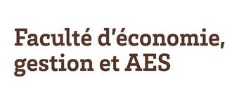
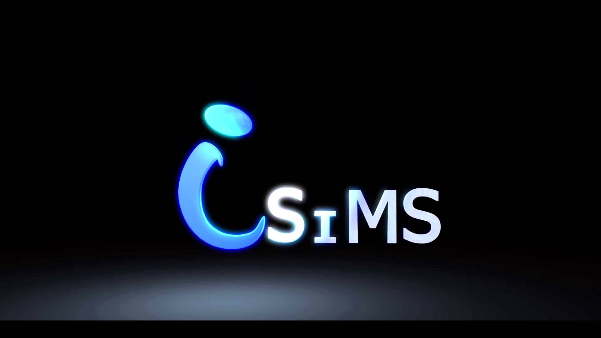

Teaching
More than 111 hours of teaching have been done. The Caffe framework has been installed in TD's rooms with the collaboration of the system team.
-

Three courses were performed: animated images and video indexation is intended for the student of the Master 2 “Computer Science” during 2015-2016; 2016-2017 and 2017-2018 . "Initiation to research” is intended for the master 2 “Miage”. The integrated course of “introduction to computer science (init-info)” is intended for L1 level. Different frameworks and languages were used : Caffe, OpenCV, C++, Python
68 hours, University of Bordeaux 
The video indexation course is dedicated for the 3rd year computer science in Bordeaux INP-ENSEIRB-MATMECA during 2015-2016; 2016-2017 and 2017-2018 totalling 28 hours. Using Matlab language, four tutorials were prepared with an update of the TDs performed each year: metrics of visual attention; motion estimation and morphological operations; search of images by the content; tracking by the technique of "mean shift".
28 hours INP-ENSEIRB-MATMECA
- 
This teaching unit is intended for all students of the sector economy and management of the college DSPEG of the University of Bordeaux. The course introduces advanced spreadsheets, data and scenario analysis. The second part of the course is dedicated to algorithmics. The goal here is that the student manage to design an algorithm using Algobox (2017-2018).
30 hourscollege DSPEG -

Preparation for C2I is dedicated for the L1 students of the institute of computer science and multimedia of Sfax. The main purpose of this course is to : structure and format a document; to create a composite document and to use data in spreadsheets
2011-2012 ISIMS